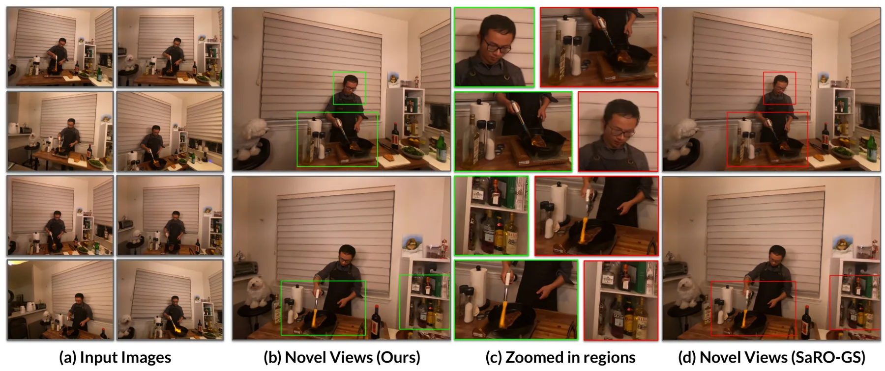
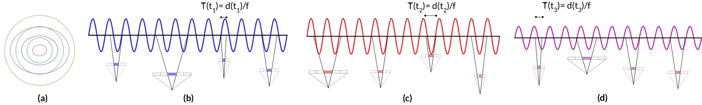
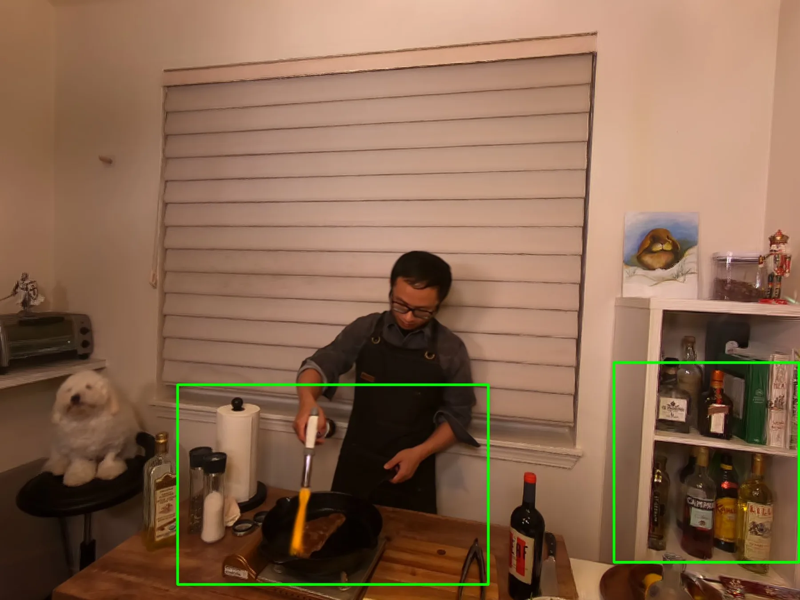
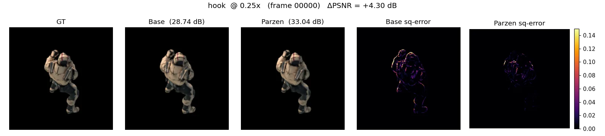

迈向无混叠的 4D Gaussian 表示：运动感知滤波Towards Alias-Free 4D Gaussian Representations with Motion-Aware Filtering
属于 4D spatial perception 的基础表示问题，对动态地图和预测渲染具有潜在影响。
一句话工作总结
从几何—采样角度改善 4D 表征的视点变化质量，后续需验证快速运动和在线计算开销。
摘要
论文针对动态新视角合成中的混叠，提出结合局部运动信息的三维平滑滤波器，并根据时间与焦深比的联合密度自适应选择滤波强度。
Novel-view synthesis of dynamic scenes, crucial for AR/VR applications, remains a challenging problem. Recent methods adapt representations like 3D Gaussian Splatting (3DGS) and Neural Radiance Fields (NeRF) for dynamic scenes by incorporating time as the fourth dimension (4D representations). These 4D representations still suffer from aliasing artifacts, especially when generating novel views from divergent viewpoints (zoom-in/zoom-out operations). While using 3D smoothing filters like those proposed in Mip-Splatting might seem like a possible solution, they fail to account for local motion and also exhibit aliasing. To address this, we propose a motion-aware 3D smoothing filter specifically designed for 4D representations. Our approach adapts the filter strength based on local motion information, effectively mitigating aliasing without compromising rendering quality. This is achieved by estimating the joint density function of time and focal-to-depth ratio using a non-parametric estimation method. During inference, we sample from this joint distribution to determine the appropriate smoothing filter. This flexible strategy can be integrated with various 4D representations. Our evaluations on standard datasets demonstrate superior performance compared to state-of-the-art methods.
图表/页面预览
{kind=link}

{kind=link}


{kind=link}
{kind=link}

{kind=link}
